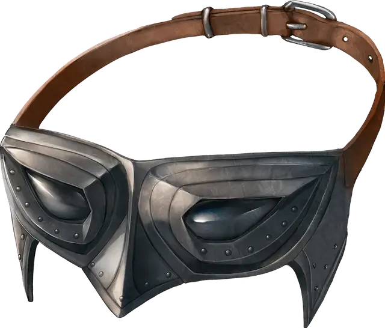

Очки орлиного зрения
Eyes of the Eagle
Чудесный предмет, необычный

Рекомендованная стоимость 400 зм
Эти хрустальные линзы носятся на глазах. Пока вы их носите, вы совершаете с Преимуществом проверки Мудрости (Восприятие), полагающиеся на зрение. В условиях хорошей видимости вы можете различать детали даже чрезвычайно далёких существ и объектов размером всего 2 фута.